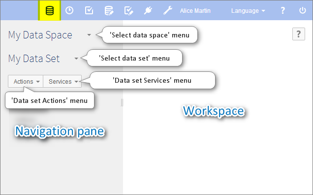

Introduction to data sets
Section contents
Overview
What is a data set?
A data set is a container for data that is based on the structural definition provided by its underlying data model. When a data model has been published, it is possible to create data sets based on its definition. If that data model is later modified and republished, all its associated data sets are automatically updated to match.
In a data set, you can consult actual data values and work with them. The views applied to tables allow representing data in a way that is most suitable to the nature of the data and how it needs to be accessed. Searches and filters can also be used to narrow down and find data.
Different permissions can also be accorded to different roles to control access at the data set level. Thus, using customized permissions, it would be possible to allow certain users to view and modify a piece of data, while hiding it from others.
Basic concepts related to data sets
A basic understanding of the following terms is beneficial when working with data sets:
Using the Data user interface
Data sets can be created, accessed and modified in the Data area using the Advanced perspective or from a specifically configured perspective. Only authorized users can access these interfaces.

Select or create a data set using the 'Select data set' menu in the navigation pane. The data structure of the data set is then displayed in the navigation pane, while record forms and table views are displayed in the workspace.
When viewing a table of the data set in the workspace, the button  displays searches and filters that can be applied to narrow down the records that are displayed.
displays searches and filters that can be applied to narrow down the records that are displayed.
Operations at the data set level are located in the Actions and Services menu in the navigation pane.
See also
Related concepts
User guide table of contents